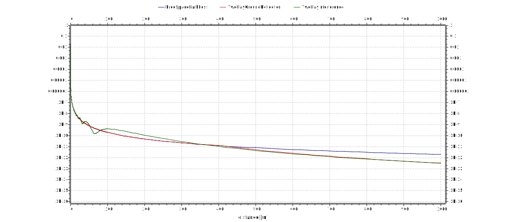
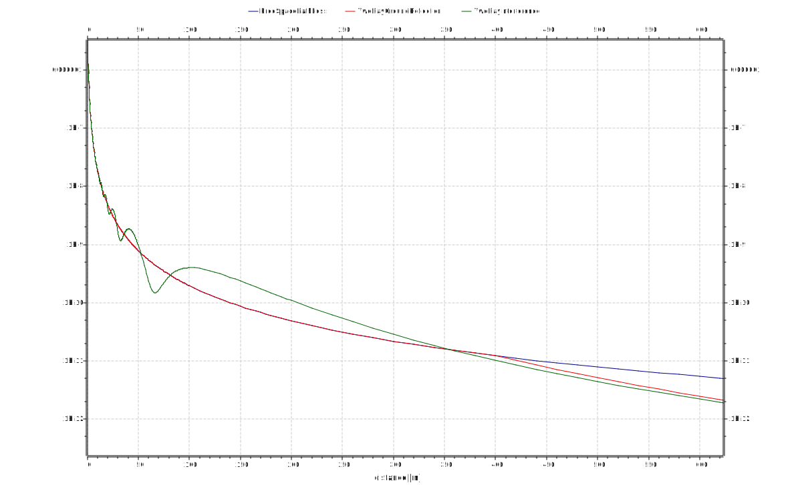
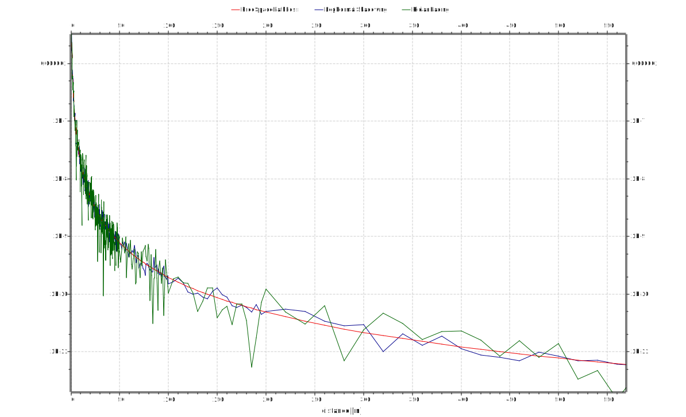
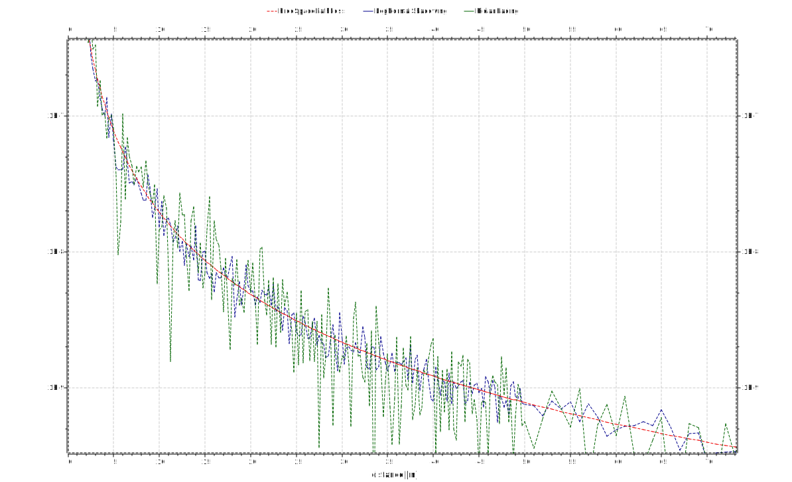

Path Loss Models¶
Goals¶
INET features various path loss models for simulating radio propagation, ranging from simple ones like free space path loss to more complex ones like Rician and Rayleigh fading. This showcase demonstrates some of the available path loss models and how to use them in simulations.
The showcase contains an example simulation, which computes received power vs. distance using several path loss model types.
4.0About path loss models¶
Path loss models are used to compute the decrease in the power of a radio signal as it propagates away from the transmitter. Path loss models are implemented by path loss modules, which are submodules of the radio medium module. The default path loss model is most often free space path loss, which computes attenuation according to the inverse square law along a single line-of-sight propagation path. This is a simple model, and realistic only in certain cases, e.g. when modeling satellite-to-satellite communications. Because of its low computational cost, it is also useful if the emphasis of the simulation is not on the accuracy of radio propagation (e.g. for testing protocols.) However, there are several more path loss models available in INET, suitable for various other scenarios. Here is a list of the path loss module types featured in this showcase example:
- FreeSpacePathLoss computes loss of signal power in a single line-of-sight propagation path, without any reflections or shadowing.
- TwoRayGroundReflection computes loss of signal power by assuming a line-of-sight wave interfering with another wave reflected from the ground between the transmitter and the receiver. This model computes interference in the far-field only, and is the same as free space path loss up until a certain crossover distance.
- TwoRayInterference is the same as the two-ray ground reflection model in the far-field, but it models the interference of the two waves in the near-field as well.
- RicianFading is a stochastic path loss model which assumes a dominant line-of-sight signal and multiple reflected signals between the transmitter and the receiver. It is useful for modeling radio propagation in an urban environment.
- LogNormalShadowing is a stochastic path loss model where power levels follow a lognormal distribution. It is useful for modeling shadowing caused by objects such as trees.
Other path loss modules in INET include RayleighFading, NakagamiFading, UwbIrStochasticPathLoss, BreakpointPathLoss, and SuiPathLoss.
The various path loss modules each have sets of parameters to fine-tune their behavior. In this showcase we leave the parameters at their defaults.
The model¶
The study will involve two wireless hosts that communicate at a varying distance. For each distance and path loss model, a probe packet will be sent from one host to the other, and the signal’s received power will be recorded.
In addition to the two hosts named named source and destination,
the network also contains a PhysicalEnvironment module, an
Ipv4NetworkConfigurator, and a Ieee80211ScalarRadioMedium:
{kind=link}
The antenna height of the transmitter and the receiver is an important part of the two-ray ground reflection and two-ray interference models, because the antenna heights affect path loss. The two-ray interference model calculates antenna heights from the z co-ordinates of the two nodes by assuming the z co-ordinate of the ground to be 0. The two-ray ground reflection model needs a ground model, which contains the elevation of the ground. The ground model is part of the physical environment module. By default, the physical environment module doesn’t use a ground model, but it is set in the configuration to use FlatGround:
*.physicalEnvironment.groundType = "FlatGround"
We will leave the ground’s elevation parameter at default, which is 0. The z co-ordinate of both hosts is set to 2 meters, thus both antennas are 2 meters above the ground. (The hosts have isotropic antennas, which lack directionality.)
The simulation is a parameter study, where source is configured to
send a UDP packet to destination. One of the parameters of the study
is the distance between the hosts (the x co-ordinate of
destination's position.) The distance changes from 0 to 1000 meters.
It changes with smaller steps near 0, where the change in power will be
more rapid.
Here are the keys from the configuration relevant for positioning the hosts:
*.*.mobility.initFromDisplayString = false
*.*.mobility.typename = "StationaryMobility"
*.*.mobility.initialY = 200m
*.*.mobility.initialZ = 2m
*.source.mobility.initialX = 0m
*.destination.mobility.initialX = ${distance=0..50 step 0.25, 51..100 step 1, 105..200 step 5, 220..1000 step 20}m
The other variable in the parameter study is the path loss type, which takes on the following values: FreeSpacePathLoss, TwoRayGroundReflection, TwoRayInterference, RicianFading, LogNormalShadowing.
The source host will transmit with the default power of 20mW. We will
record the power of the received transmission, using the
receptionPower statistic. The receptionPower statistic is
declared in the NED file, and it uses the receptionMinSignalPower
signal of the radio medium module as input:
@statistic[receptionPower](source="receptionMinSignalPower(radioMedium.signalArrivalStarted)"; record=last);
Results¶
The power of the received signal vs. distance, using FreeSpacePathLoss, TwoRayGroundReflection and TwoRayInterference path loss module types, is displayed on the following plot:
{kind=link}
Here is the same plot zoomed in:
{kind=link}
It is apparent that the two-ray ground reflection model yields the same values as the free space path loss model, up until the cross-over distance. After that point, the two curves diverge. The power of the two-ray interference model fluctuates in the near-field, and converges to the two-ray ground reflection model in the far- field. Thus the two-ray interference model can be used for more realistic two-ray propagation simulations.
The next plot displays the power of the received signal vs. distance using the RicianFading and LogNormalShadowing models, and the FreeSpacePathLoss model for reference:
{kind=link}
The sharp visual change in the “raggedness” of the curves near 100m is due to the data points becoming less dense. Here is the same plot zoomed in on the near-field:
{kind=link}
Further Information¶
For more information about the path loss models in INET, refer to the INET Reference. The following links provide more information about the path loss models in general (not about the INET implementation):